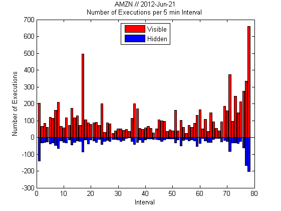
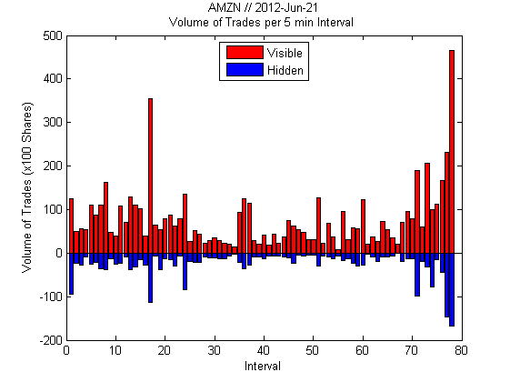
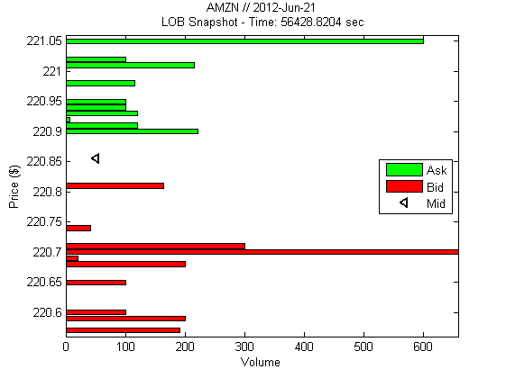
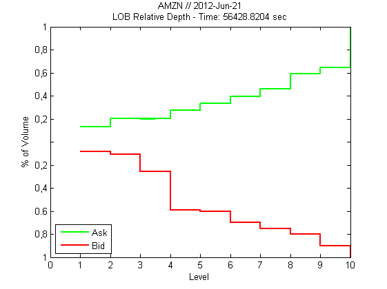
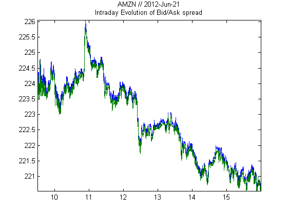
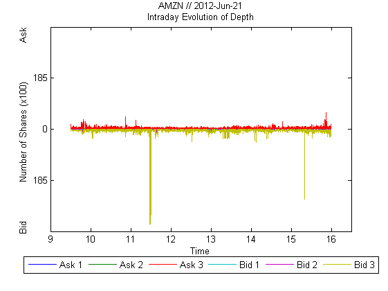

HFT Limit order book data preprocessing and visualization
using LOBSTER from Berlin University http://LOBSTER.wiwi.hu-berlin.de Data used: AMZN - 2012-June-21 - 10 Levels ----------------------------------------------------------
Contents
- Set up the Basics
- Load Messsage File
- Data Preparation - Message File
- Set Bounds for Intraday Intervals
- Sampling - Number of Executions and Trade Volume by Interval
- Plot - Number of Executions and Trade Volume by Interval
- Load Orderbook File
- Data Preparation - Orderbook File
- Plot - Snapshot of the Limit Order Book
- Plot - Relative Depth in the Limit Order Book
- Plot bid/ask spread intraday evolution
- Plot - Intraday Evolution of Depth
- Preprocessing our VAR time serie
- Concatenating relevant values
- Saving as a .mat file
Set up the Basics
Clear system
clear all; clc; % Stock name ticker = 'AMZN'; % Levels lvl = 10; % File names nameBook = 'AMZN_2012-06-21_34200000_57600000_orderbook_10.csv'; nameMess = 'AMZN_2012-06-21_34200000_57600000_message_10.csv'; % Date of files demoDate = [2012,6,21]; % year, month, day
Load Messsage File
Load data
mess = dlmread(nameMess); % Message file information: % ---------------------------------------------------------- % % - Dimension: (NumberEvents x 6) % % - Structure: Each row: % Time stamp (sec after midnight with decimal % precision of at least milliseconds and % up to nanoseconds depending on the period), % Event type, Order ID, Size (# of shares), % Price, Direction % % Event types: % - '1' Submission new limit order % - '2' Cancellation (partial) % - '3' Deletion (total order) % - '4' Execution against visible % liquidity % - '5' Execution against hidden % liquidity % - '7' Trading Halt (Detailed % information below) % % Direction: % - '-1' Sell limit order % - '-2' Buy limit order % - NOTE: Execution of a sell (buy) % limit order corresponds to % a buyer-(seller-) initiated % trade, i.e. a BUY (SELL) trade. % % ----------------------------------------------------------
Data Preparation - Message File
Remove observations outside the official trading hours ---------------------------------------------------------- Trading hours (start & end)
startTrad = 9.5*60*60; % 9:30:00 in sec % after midnight endTrad = 16*60*60; % 16:00:00 in sec % after midnight % Get index of observations timeIdx = mess(:,1) >= startTrad & mess(:,1) <= endTrad; mess = mess(timeIdx,:); % Note: As the rows of the message and orderbook file % correspond to each other, the time index of % the message file can also be used to 'cut' % the orderbook file. % Check for trading halts % ---------------------------------------------------------- tradeHaltIdx = find(mess(:,2) == 7); if ~isempty(tradeHaltIdx) disp(['Data contains trading halt! Trading halt, ' ... 'quoting resume, and resume of trading indices in tradeHaltIdx']); else disp('No trading halts detected.'); end % When trading is halted, a message of type '7' is written into the % message file. The corresponding price and trade direction are set % to '-1' and all other properties are set to '0'. % Should quoting be allowed during the halt, another message % of type '7' with price '0' is added. Again the trade direction % is set to '-1' and all other fields are set to '0'. % The resuming of trading is indicated by a message of type '7' % and price '1' (Trade direction '-1' and all other entries '0'). % For messages of type '7' the corresponding orderbook rows contains % a duplication of the preceding order book state. % The reason for the trading halt is not included in the output. % % Example: Stylized trading halt messages in 'message' file. % % Halt: 36023 | 7 | 0 | 0 | -1 | -1 % ... % Quoting: 36323 | 7 | 0 | 0 | 0 | -1 % ... % Resume Trading: 36723 | 7 | 0 | 0 | 1 | -1 % ... % The vertical bars indicate the different columns in the % message file.
No trading halts detected.
Set Bounds for Intraday Intervals
Define interval length
freq = 5*60; % Interval length in sec % Set interval bounds bounds = (startTrad:freq:endTrad)'; % Number of intervals bl = size(bounds,1); % Indices for intervals boundIdx = zeros(bl,1); k1 = 1; for k2 = 1:size(mess,1) if mess(k2,1) >= bounds(k1) boundIdx(k1,1) = k2; k1 = k1+1; end end % Get index of observations relevant for the bound boundIdx(1:end-1) = boundIdx(1:end-1)-1; boundIdx(end) = length(mess); % Note: % - This is a rather rough procedure for obtaining % interval bounds! Be careful! % - boundIdx(1) = 0 due to loop characteristics below.
Sampling - Number of Executions and Trade Volume by Interval
Note: Difference between trades and executions
The LOBSTER output records limit order executions
and not what one might intuitively consider trades. Imagine a volume of 1000 is posted at the best ask
price. Further, an incoming market buy order of
volume 1000 is executed against the quote. The LOBSTER output of this trade depends on the
composition of the volume at the best ask price.
Take the following two scenarios with the best ask
volume consisting of ...
(a) 1 sell limit order with volume 1000
(b) 5 sell limit orders with volume 200 each
(ordered according to time of submission) The LOBSTER output for case ...
(a) shows one execution of volume 1000. If the
incoming market order is matched with one
standing limit order, execution and trade
coincide.
(b) shows 5 executions of volume 200 each with the
same time stamp. The incoming order is matched
with 5 standing limit orders and triggers 5
executions. Bottom line:
LOBSTER records the exact limit orders against
which incoming market orders are executed. What
might be called 'economic' trade size has to be
inferred from the executions.% Collection matrix tradesInfo = zeros(bl-1,4); % Note: Number visible executions, volume visible % trades, number hidden executions, % volume hidden trades for k1 = 1:(bl-1) % Get intraday mess window temp = mess(boundIdx(k1)+1:boundIdx(k1+1),[2,4]); % Visible tempVis = temp(temp(:,1)==4,2); % Hidden tempHid = temp(temp(:,1)==5,2); % Collect information tradesInfo(k1,:) = [ size(tempVis,1), sum(tempVis), ... size(tempHid,1), sum(tempHid)]; clear temp tempVis tempHid; end
Plot - Number of Executions and Trade Volume by Interval
Plot number of executions
figure('color','white','Name','Number of Executions'); % Visible ... bar(tradesInfo(:,1),'red'); title({[ticker ' // ' ... datestr(datenum(demoDate),'yyyy-mmm-dd')] ... ['Number of Executions per ' ... num2str(freq./60) ' min Interval ']}); xlabel('Interval'); ylabel(['Number of Executions']); hold on % Hidden ... bar(-tradesInfo(:,3),'blue'); % Legend legend('Visible','Hidden','Location','North'); hold off; % Plot volume of trades figure('color','white','Name','Volume of Trades'); % Visible ... bar(tradesInfo(:,2)./100,'red'); title({[ticker ' // ' ... datestr(datenum(demoDate),'yyyy-mmm-dd')] ... ['Volume of Trades per ' ... num2str(freq./60) ' min Interval ']}); xlabel('Interval'); ylabel(['Volume of Trades (x100 Shares)']); hold on % Hidden ... bar(-tradesInfo(:,4)./100,'blue'); % Legend legend('Visible','Hidden','Location','North'); hold off; % Note: When considering cumulative volume in an interval % the distinction between trades and executions is % not necessary. However, when, for example, % investigating average trade size one can not rely % on the computations performed here. In this case % the executions first have to be aggregated to % trades. 
Load Orderbook File
Load data
book = dlmread(nameBook); % Note: The file contains more than 250 000 entries. It % takes a few seconds to load. % Orderbook file information: % ---------------------------------------------------------- % % - Dimension: (NumberEvents x (NumberLevels*4+1)) % % - Structure: Each row: % Ask price 1, Ask volume 1, Bid price 1, % Bid volume 1, Ask price 2, Ask volume 2, % Bid price 2, Bid volume 2, ... % % - Note: Unoccupied bid (ask) price levels are % set to -999999999 (99999999) with volume 0 % % ----------------------------------------------------------
Data Preparation - Orderbook File
% Remove observations outside the official trading hours % ---------------------------------------------------------- % Remove observations outside time window book = book(timeIdx,:); % Convert prices into dollars % ---------------------------------------------------------- book(:,[1:2:(4*lvl)]) = book(:,[1:2:(4*lvl)])./10000; % Note: LOBSTER stores prices in dollar price times 10000
Plot - Snapshot of the Limit Order Book
Select index of event to be displayed
eventIdx = unidrnd(length(book)); % Note: Pick a random row/event from the order book % Postions of variables in the book askPricePos = 1:4:(lvl*4); askVolPos = askPricePos+1; bidPricePos = askPricePos+2; bidVolPos = bidPricePos+1; vol = 2:2:(lvl*4); % Plot limits ... % Price maxPrice = book(eventIdx,askPricePos(lvl)) + 0.01; minPrice = book(eventIdx,bidPricePos(lvl)) - 0.01; % Volume maxVol = max(book(eventIdx,vol)); % Mid quote mid = 0.5*(sum(book(eventIdx,[1,3]),2)); % Plot figure('color','white','Name','Limit Order Book - Snapshot'); % Ask side barh(book(eventIdx,askPricePos)', ... book(eventIdx,askVolPos)','green'); title({[ticker ' // ' ... datestr(datenum(demoDate),'yyyy-mmm-dd')] ... [' LOB Snapshot - Time: ' ... num2str(mess(eventIdx,1)) ' sec']}); xlabel('Volume'); ylabel('Price ($)'); ylim([minPrice,maxPrice]); xlim([0,maxVol]); hold on; % Bid side barh(book(eventIdx,bidPricePos)', ... book(eventIdx,bidVolPos)','red'); % Mid plot(50,mid,'<k','LineWidth', 2); % Legend legend('Ask','Bid','Mid','Location','East'); hold off
Plot - Relative Depth in the Limit Order Book
Relative volume ... Ask
bookVolAsk = cumsum(book(eventIdx,askVolPos),2); bookVolAsk = bookVolAsk./bookVolAsk(end); % Bid bookVolBid = cumsum(book(eventIdx,bidVolPos),2); bookVolBid = bookVolBid./bookVolBid(end); % Plot figure('color','white','Name',... 'Limit Order Book - Relative Depth'); % Ask side stairs((1:lvl)',bookVolAsk','LineWidth',1.5,'Color','g'); title({[ticker ' // ' ... datestr(datenum(demoDate),'yyyy-mmm-dd')] ... ['LOB Relative Depth - Time: ' ... num2str(mess(eventIdx,1)) ' sec']}); ylabel('% of Volume'); xlabel('Level'); xlim([0,lvl]); set(gca,'YTickLabel', ... {'1','0,8','0.6','0,4','0,2','','0,2', ... '0,4','0,6','0,8','1'},'YTick', ... [-1 -0.8 -0.6 -0.4 -0.2 0 0.2 0.4 0.6 0.8 1]); hold on % Bid side stairs((1:lvl)',-1*bookVolBid', ... 'LineWidth',1.5,'Color','r'); % Legend legend('Ask','Bid','Location','SouthWest'); hold off
Plot bid/ask spread intraday evolution
plot(mess(:,1)./(60*60), ... book(:,[1,3])); title({[ticker ' // ' ... datestr(datenum(demoDate),'yyyy-mmm-dd')] ... ['Intraday Evolution of Bid/Ask spread']}); axis tight;
Plot - Intraday Evolution of Depth
% Display only the first 3 levels maxLvl = 3; % Postion of volumes in the book askVolPos = 2:4:maxLvl*4; % Depth bookVolAsk = cumsum(book(:,askVolPos)./100,2); bookVolBid = cumsum(book(:,askVolPos+2)./100,2); % Max depth maxVol = max(max(bookVolAsk(:,end)),max(bookVolBid(:,end))); maxVol = floor(maxVol*1.1/10)*10; % LegendStr legendStr = [repmat('Ask',maxLvl,1),blanks(maxLvl)',... num2str((1:maxLvl)'); repmat('Bid',maxLvl,1), ... blanks(maxLvl)',num2str((1:maxLvl)')]; % Plot figure('color','white','Name', ... 'Limit Order Book - Intraday Depth'); plot(mess(:,1)./(60*60), ... [bookVolAsk, -1*bookVolBid]); title({[ticker ' // ' ... datestr(datenum(demoDate),'yyyy-mmm-dd')] ... ['Intraday Evolution of Depth']}); ylim([-maxVol,maxVol]); xlim([9,16.5]); xlabel('Time'); ylabel(['Bid ' blanks(12) ... ' Number of Shares (x100) ' blanks(12) ' Ask ']); % Tick labels set(gca,'YTickLabel',{' ', num2str(maxVol/2), 0, ... num2str(maxVol/2), ' '},'YTick', ... [-maxVol -maxVol/2 0 maxVol/2 maxVol]); % Legend legend(legendStr,'Location','SouthOutside', ... 'Orientation', 'horizontal');
Preprocessing our VAR time serie
execution business times
execution_id = (mess(:,2) == 4) | (mess(:,2)==5); % locating buyer initiated trade (execution of a sell limit order) all_buy_exec=execution_id&mess(:,6)==-1; all_buy_exec=double(all_buy_exec); buy_initiated=all_buy_exec; buy_initiated(2:end)=all_buy_exec(2:end)-all_buy_exec(1:end-1); buy_initiated=max(buy_initiated,0); % locating seller initiated trade (execution of a buy limit order) all_sell_exec=execution_id&mess(:,6) ==1; all_sell_exec=double(all_sell_exec); sell_initiated=all_sell_exec; sell_initiated(2:end)=all_sell_exec(2:end)-all_sell_exec(1:end-1); sell_initiated=max(sell_initiated,0); % consecutive executions of sell limit order stem from a same market order % executing over multiple limit orders
Concatenating relevant values
Display only the first 3 levels
maxLvl = 3; % Postion of ask volumes in the book for the first 3 levels askVolPos = 2:4:maxLvl*4; % log best ask, log best bid, log best ask volume, log best bid volume, Y=[log(book(:,1)),log(book(:,3)), log(book(:,askVolPos)),log(book(:,askVolPos+2)),buy_initiated,sell_initiated]; timestamps=mess(:,1);
Saving as a .mat file
save('preprocessed_time_series.mat','Y','timestamps');